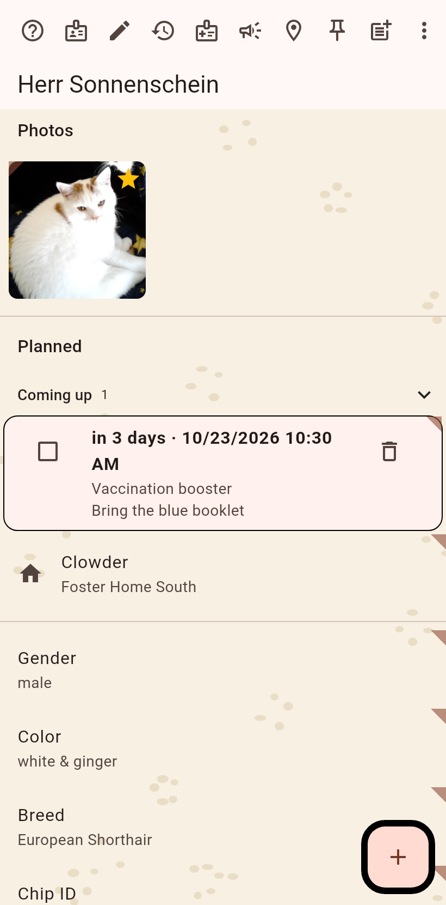
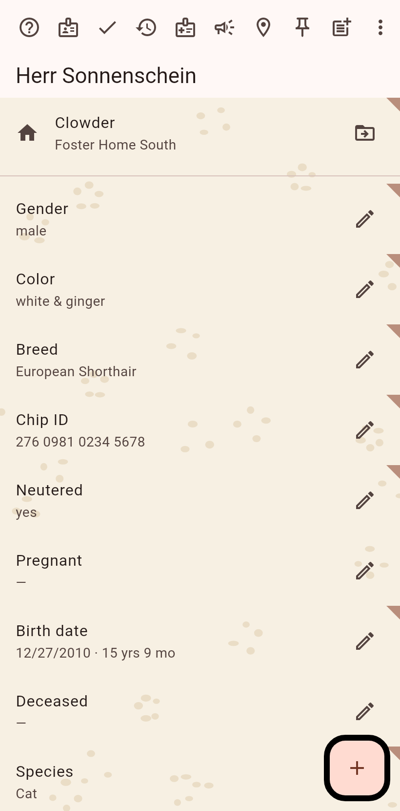
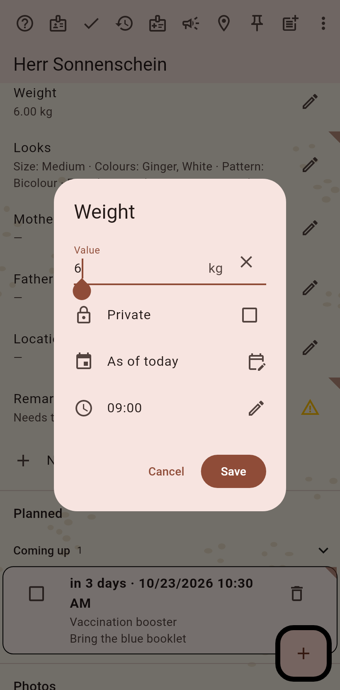
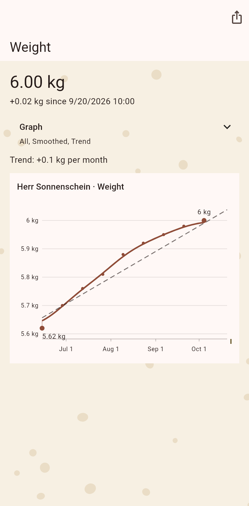

1. The cat page
The cat in read mode. Weight stands among the fields with its latest value and a small course under it.

2. Turn on editing
The pen in the bar turns on editing; every field gets a pen of its own.

3. Enter the weight
The editor takes the number in the unit your device prefers, the date it counts from, and the private mark. Save.

4. The graph
The clock on the field opens its history; a number's history is a graph: the measured points, the smoothed line, the trend, over the range you pick.
